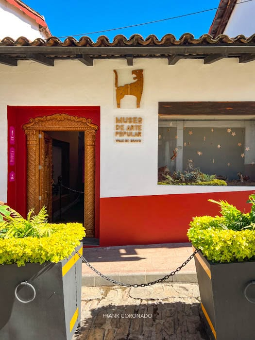
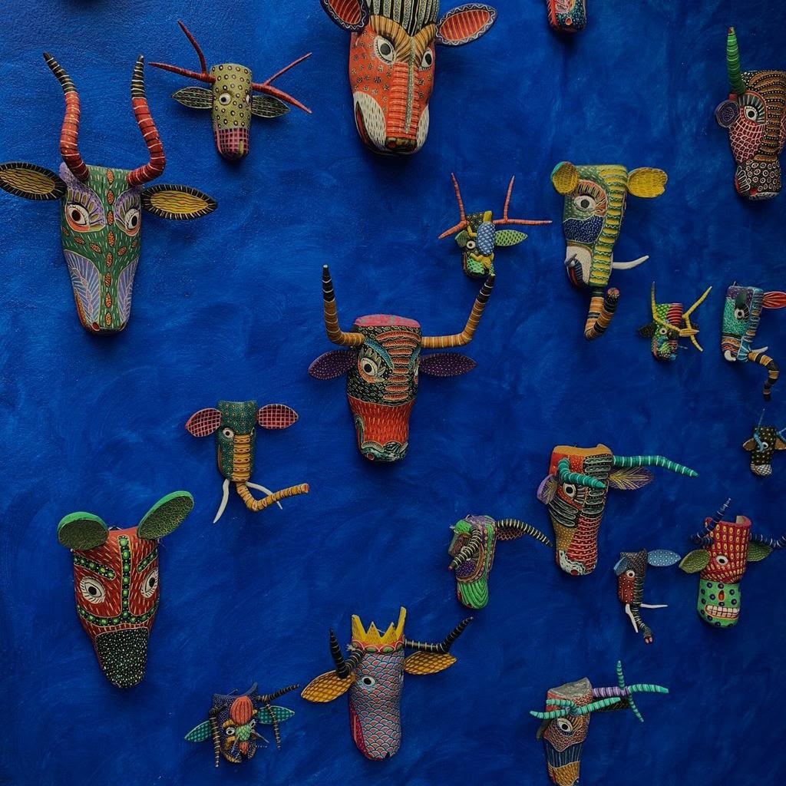

El Museo de Arte Popular de Valle de Bravo es un espacio cultural dedicado a conservar, exhibir y promover el arte popular mexicano.
Es un espacio cultural dedicado a conservar, exhibir y promover el arte popular mexicano. En él se encuentra una colección de piezas artesanales provenientes de diferentes estados de México, que representan las tradiciones, costumbres y creatividad de los artesanos.
Es atractivo porque permite conocer la riqueza cultural de México a través de objetos elaborados artesanalmente. Cada pieza tiene diferentes formas, colores, materiales y técnicas que representan las tradiciones de distintas comunidades.

El Museo de Arte Popular de Valle de Bravo es un lugar donde se exhiben diferentes artesanías mexicanas elaboradas a mano. Cuenta con piezas como alebrijes, cerámica, figuras religiosas y objetos decorados que representan las tradiciones de nuestro país. Es un lugar atractivo porque permite conocer el talento de los artesanos y aprender sobre la cultura mexicana. Además, ayuda a conservar nuestras costumbres y tradiciones.
El Museo de Arte Popular de Valle de Bravo cuenta con piezas artesanales que representan la cultura y las tradiciones de México. Entre ellas destacan las figuras de barro, cerámicas, textiles bordados, vestimentas tradicionales y objetos elaborados con fibras naturales.